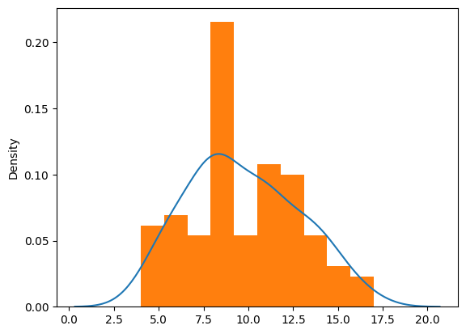
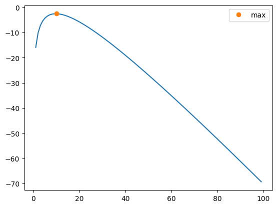
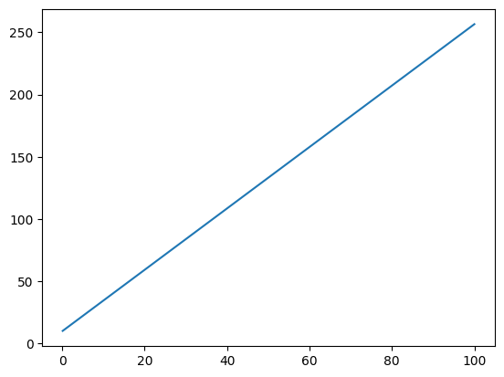

from scipy.stats import poisson
import numpy as np
import matplotlib.pyplot as plt
import seaborn as sns11-12: MLE e Regressione Abalone
Analisi di una distribuzione tramite MLE
mu = 10
samples = poisson.rvs(mu=mu, size=100)
samplesarray([12, 8, 8, 10, 14, 16, 11, 5, 15, 8, 9, 9, 9, 7, 13, 15, 11,
11, 11, 6, 8, 8, 8, 10, 9, 9, 6, 13, 6, 8, 6, 11, 11, 9,
8, 11, 14, 6, 10, 11, 11, 13, 5, 12, 10, 8, 8, 9, 6, 13, 11,
4, 8, 15, 9, 7, 8, 8, 7, 10, 6, 10, 11, 5, 7, 13, 6, 9,
14, 11, 14, 14, 13, 12, 7, 16, 11, 6, 5, 4, 8, 7, 14, 13, 9,
8, 5, 8, 12, 8, 13, 12, 7, 14, 11, 9, 10, 5, 17, 15])sns.kdeplot(samples)
plt.hist(samples, density=True)
plt.show()
lkls = []
for i in range(0, 100):
lkls.append(np.round(poisson.logpmf(samples, mu=i).mean(),3))plt.plot(range(0,100), lkls)
plt.plot(lkls.index(max(lkls)), max(lkls),"o" ,label="max")
plt.legend()
plt.show()
lkls.index(max(lkls))10from scipy.optimize import minimize_scalarget_lkl = lambda mu: poisson.logpmf(samples, mu=mu).mean() * -1
minimize_scalar(get_lkl, bracket=(0, 15)) message:
Optimization terminated successfully;
The returned value satisfies the termination criteria
(using xtol = 1.48e-08 )
success: True
fun: 2.52735058697955
x: 9.710000152660585
nit: 11
nfev: 14samples.mean()np.float64(9.71)Regressione Lineare su Abalone
from ucimlrepo import fetch_ucirepo
from sklearn.linear_model import LinearRegression
from sklearn.model_selection import train_test_split
from sklearn.metrics import mean_absolute_error, mean_squared_error, r2_score
from sklearn.decomposition import PCA
import pandas as pd
import seaborn as sns# fetch dataset
abalone = fetch_ucirepo(id=1)
# data (as pandas dataframes)
X = abalone.data.features
y = abalone.data.targets.valuesX.info()<class 'pandas.core.frame.DataFrame'>
RangeIndex: 4177 entries, 0 to 4176
Data columns (total 8 columns):
# Column Non-Null Count Dtype
--- ------ -------------- -----
0 Sex 4177 non-null object
1 Length 4177 non-null float64
2 Diameter 4177 non-null float64
3 Height 4177 non-null float64
4 Whole_weight 4177 non-null float64
5 Shucked_weight 4177 non-null float64
6 Viscera_weight 4177 non-null float64
7 Shell_weight 4177 non-null float64
dtypes: float64(7), object(1)
memory usage: 261.2+ KBnp.unique(X["Sex"])array(['F', 'I', 'M'], dtype=object)X = pd.get_dummies(X, columns=['Sex'])print(X.head(1)) Length Diameter Height Whole_weight Shucked_weight Viscera_weight \
0 0.455 0.365 0.095 0.514 0.2245 0.101
Shell_weight Sex_F Sex_I Sex_M
0 0.15 False False True X_train, X_test, y_train, y_test = train_test_split(X, y, test_size=0.2)pca = PCA(n_components=1)
X_train = pca.fit_transform(X_train)
X_test = pca.transform(X_test)model = LinearRegression()
model.fit(X_train, y_train)
print(model.coef_)
print(model.intercept_)[[2.46486711]]
[9.88207124]f = lambda x: model.coef_ * x + model.intercept_x = np.linspace(0.1, 100, 100)
y = f(x)xarray([ 0.1 , 1.10909091, 2.11818182, 3.12727273,
4.13636364, 5.14545455, 6.15454545, 7.16363636,
8.17272727, 9.18181818, 10.19090909, 11.2 ,
12.20909091, 13.21818182, 14.22727273, 15.23636364,
16.24545455, 17.25454545, 18.26363636, 19.27272727,
20.28181818, 21.29090909, 22.3 , 23.30909091,
24.31818182, 25.32727273, 26.33636364, 27.34545455,
28.35454545, 29.36363636, 30.37272727, 31.38181818,
32.39090909, 33.4 , 34.40909091, 35.41818182,
36.42727273, 37.43636364, 38.44545455, 39.45454545,
40.46363636, 41.47272727, 42.48181818, 43.49090909,
44.5 , 45.50909091, 46.51818182, 47.52727273,
48.53636364, 49.54545455, 50.55454545, 51.56363636,
52.57272727, 53.58181818, 54.59090909, 55.6 ,
56.60909091, 57.61818182, 58.62727273, 59.63636364,
60.64545455, 61.65454545, 62.66363636, 63.67272727,
64.68181818, 65.69090909, 66.7 , 67.70909091,
68.71818182, 69.72727273, 70.73636364, 71.74545455,
72.75454545, 73.76363636, 74.77272727, 75.78181818,
76.79090909, 77.8 , 78.80909091, 79.81818182,
80.82727273, 81.83636364, 82.84545455, 83.85454545,
84.86363636, 85.87272727, 86.88181818, 87.89090909,
88.9 , 89.90909091, 90.91818182, 91.92727273,
92.93636364, 93.94545455, 94.95454545, 95.96363636,
96.97272727, 97.98181818, 98.99090909, 100. ])yarray([[ 10.12855795, 12.61583294, 15.10310793, 17.59038292,
20.07765791, 22.5649329 , 25.05220789, 27.53948288,
30.02675787, 32.51403286, 35.00130785, 37.48858284,
39.97585783, 42.46313282, 44.95040781, 47.4376828 ,
49.92495779, 52.41223278, 54.89950777, 57.38678276,
59.87405775, 62.36133274, 64.84860773, 67.33588272,
69.82315771, 72.3104327 , 74.79770769, 77.28498268,
79.77225767, 82.25953266, 84.74680765, 87.23408264,
89.72135763, 92.20863262, 94.69590761, 97.1831826 ,
99.67045759, 102.15773258, 104.64500757, 107.13228256,
109.61955755, 112.10683254, 114.59410753, 117.08138252,
119.56865751, 122.0559325 , 124.54320749, 127.03048248,
129.51775747, 132.00503246, 134.49230745, 136.97958244,
139.46685743, 141.95413242, 144.44140741, 146.9286824 ,
149.41595739, 151.90323238, 154.39050737, 156.87778236,
159.36505735, 161.85233235, 164.33960734, 166.82688233,
169.31415732, 171.80143231, 174.2887073 , 176.77598229,
179.26325728, 181.75053227, 184.23780726, 186.72508225,
189.21235724, 191.69963223, 194.18690722, 196.67418221,
199.1614572 , 201.64873219, 204.13600718, 206.62328217,
209.11055716, 211.59783215, 214.08510714, 216.57238213,
219.05965712, 221.54693211, 224.0342071 , 226.52148209,
229.00875708, 231.49603207, 233.98330706, 236.47058205,
238.95785704, 241.44513203, 243.93240702, 246.41968201,
248.906957 , 251.39423199, 253.88150698, 256.36878197]])plt.plot(x,y[0])
plt.show()
predictions = model.predict(X_test)
mse = mean_squared_error(y_test, predictions)
ase = mean_absolute_error(y_test, predictions)
r2 = r2_score(y_test, predictions)print(f"MSE: {round(mse,2)}")
print(f"ASE: {round(ase,2)}")
print(f"R^2: {round(r2,2)}")MSE: 8.93
ASE: 2.08
R^2: 0.25